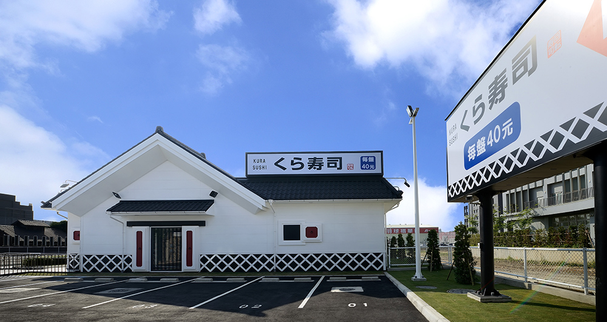

藏壽司
品牌故事

日本藏壽司創辦人田中社長小時候家裡是蔬果店，除蔬果外還賣有許多東西，
某日社長被要求要細心地擦拭芥草(日本用來祭拜祖先或是神明的一種植物)，
與祖母兩人花費了半天的時間擦拭幾萬枚的芥草，對於幼年的社長來說十分痛苦，
經過了一個小時後，就開始偷懶了，看到這個樣子的社長，
平常很慈祥的祖母便很嚴厲地詢問社長「你是從哪裡出生的呢?
因為有你的父親和母親，還有祖先們的存在，才會有現在的你不是嗎?
這個芥草是客人們為了感謝祖先們的象徵，賣給客人用沾有泥巴的芥草去供養祖先，
難道不會對客人感到抱歉嗎?」
社長認為這是日本人的良心，但這個良心在現在的世道已經漸漸消失了，
許多的公司也是這樣，只要不觸法就覺得做什麼都可以。
社長認為日本本來的文化是對於看不見的東西，也十分重視，
因此希望透過日本食物文化代表的壽司，再次的建立那美好的日本，並且向世界傳遞。
企業理念
發展沿革
創新服務
心得